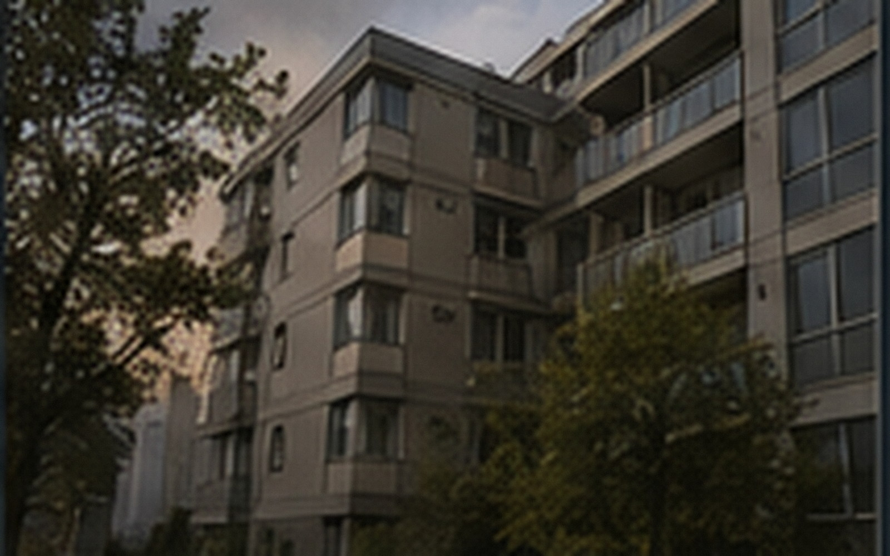

QISHAN RESIDENCE · LINCHUAN
把日子住得
安静一点。
旧城边缘，两栋 17 层住宅。步行可到老街与地铁换乘，公共空间持续维护，适合希望长期住下的人。
长期居住
两栋楼，136 套住宅
原 1990 年代职工宿舍于 2018 年完成更新。我们保留成熟街区的尺度，同时更新公共设备、门禁与长期租赁服务。
17F
A 栋
靠旧城一侧，东向与东南向房源较多，靠近旧城生活街区。
17F
B 栋
面向社区花园，一居与小两居比例较高，公共区域更安静。
24h
紧急响应
漏水、停电、电梯困人和公共设备异常提供 24 小时值班。

本周可约
A栋 1403 · 52㎡ 两室一厅
东向，2024 年完成格局优化。独立厨房、干湿分区卫生间，可一至两人长期居住。
- 租金
- ¥4,980 / 月
- 起租
- 12 个月
- 可入住
- 2026-09-05
- 宠物
- 可申请
住在这里
不只是一张房源列表
日常服务以真实居住为主：包裹、停车、公共区域、维修与社区活动，都可以从网站直接查询。
交通
步行约 8 分钟到江湾路站；晚高峰前往城南商务区约 35 分钟。
生活
老街菜场、社区卫生站、便利店均在 800 米生活圈内。
费用
物业服务费包含在租金中；水电燃气按户表与实际使用结算。
看房
周二至周日 10:00-18:00，可在线选择房源后联系租赁顾问。